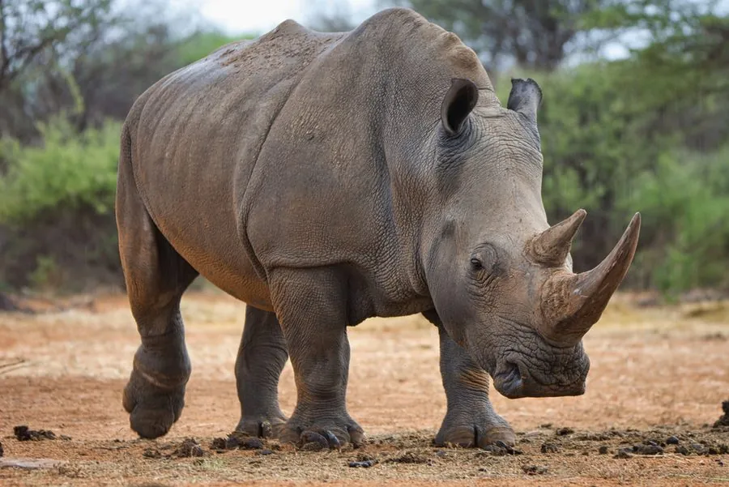

哺乳动物 · 动物界
白犀 Ceratotherium simum

现存体型最大的犀牛，宽平的嘴唇适合啃食短草，名字可能源自荷兰语“宽”的误译，南方种群数量最多。
- 分类
- 门脊索动物门纲哺乳纲目奇蹄目科犀科属白犀属
- 栖息环境
- 非洲稀树草原与短草草地，偏好有水源的开阔平地
- 地理分布
- 非洲南部（南方白犀）与中非、东非局部（北方白犀，几近灭绝）
- 保护级别
- IUCN 近危（NT，南方白犀）；北方白犀为极危（CR）
物种志
白犀体长 3.4–4.2 米，肩高 1.6–1.9 米，体重 1500–2300 kg，雄性大于雌性，是现存最大的犀牛。它的嘴唇宽而平，适合贴近地面啃食短草；头部前端有一长一短两只角，长角可达 1 米以上，由角蛋白构成。
白犀栖息于非洲的稀树草原与草地，偏好有短草和水源的开阔地带，主要在晨昏和夜间取食，白天在阴凉处休息。它是犀牛中最爱群居的种类，雌犀与幼犀结成 2–14 只的群体，成年雄犀则占据领地、独来独往。白犀的视力很差，但听觉与嗅觉灵敏，奔跑时速可达 40 km/h。南方白犀曾从不足 100 只恢复到 2 万只左右，成为保护成功的案例；而北方白犀仅剩极少数个体，处于功能性灭绝边缘。
形态与习性
- 食性以短草为主，每天进食约 50 kg 草料
- 体长3.4–4.2 m，肩高 1.6–1.9 m
- 体重1500–2300 kg
- 寿命野外约 40–50 年
- 繁殖妊娠期约 16 个月，每胎 1 仔
- 社会结构雌犀与幼犀结成 2–14 只的群体，雄犀独居守领地
- 角前角可长达 1 m 以上，成分为角蛋白
趣味知识
- “白犀”的名字可能来自荷兰语“wijd”（宽）的误译，与体色无关。
- 白犀的嘴唇宽而平，适合贴地啃食其他犀牛够不到的短草。
- 雄犀用尿液和粪便标记领地边界，并沿固定路线巡逻。
- 南方白犀曾从不足百只恢复到约 2 万只，是保护成功的案例。